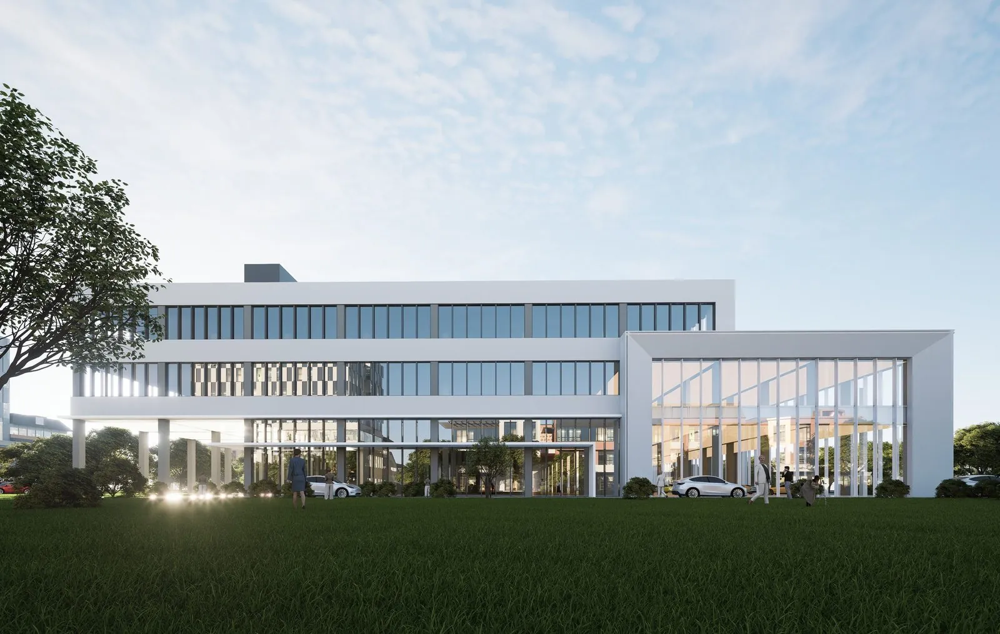
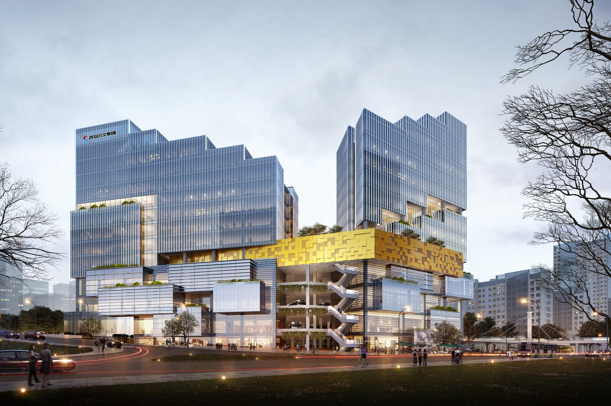

吕国祥 · 建筑师与空间观察者个人作品与持续的探索 / 2026
空间是
行为的容器。
从真实的建筑出发，
理解变化，为生活留出可能。

常州比亚迪全品牌旗舰店 / 建筑效果图精选 / 常州比亚迪全品牌旗舰店中国 · 常州 / 主创建筑师
01 /精选作品ARCHITECTURE / BIM / PLANNING
各有尺度，
共同关乎生活。
从一座住宅到一片城市，
让空间回应它所承载的真实需求。
02 /设计观察 · 常州比亚迪从需求到空间
汽车在变。
空间如何持续成立？
当产品更新比建筑更快，设计需要给展示、运营与未来改造留下余地。
阅读项目建筑退后一步，展示向前。01 / 03
01把城市界面留给展示
沿街的建筑面服务于展示与城市交流，车流和运营流线在总体布局中获得各自的位置。
02为变化预留余地
考虑层高、空间拆分与合并的可能，让建筑能够适应未来的品牌展示和功能升级。
03用需求校准投入
按实际使用需求组织空间、拆解投入，让设计判断与建设实施保持联系。
“不是为了被看见一次，
而是为了持续成立。”
画面为项目原始资料中的效果图与图纸。
03 /空间观点观察 · 提问 · 验证
先观察变化，
再组织空间。
我说的“行为”，不仅是人的动作，也是更广义的变化过程。建筑设计，是为这些变化提供条件。
OBSERVATION / 01
从变化出发
先观察空间里正在发生的事情，再理解需要什么条件。形态，是回应这些条件的结果。
RESEARCH / 01
户型急诊室
从家庭十年、二十年的生活变化，梳理真实的空间需求。
RESEARCH / 02
数字住宅
探索物理住宅与个人数字空间之间的对应关系。
RESEARCH / 03
空间与 AI
让观察、设计经验与数字工具，成为可以持续验证的方法。
04 /完整项目索引建筑设计与数字实践
作品档案.
39正在读取项目…
05 /关于吕国祥LV GUOXIANG

青岛海尔公交 TOD / 建筑设计建筑师 / BIM 从业者 / 空间观察者以建筑为起点，
以建筑为起点，
看向更广的空间。
我是吕国祥，来自重庆。我的工作跨越建筑设计、BIM 与数字实践，项目经历涉及中国与新加坡。这里既是一份作品集，也是持续生长的空间观察记录。
我关注空间怎样承载行为、如何回应时间，以及它还能支持哪些尚未发生的生活。
- 实践
- 建筑设计 · BIM · 城市规划
- 项目地域
- 中国 · 新加坡
- 关注
- 行为 · 周期 · 空间的可能性